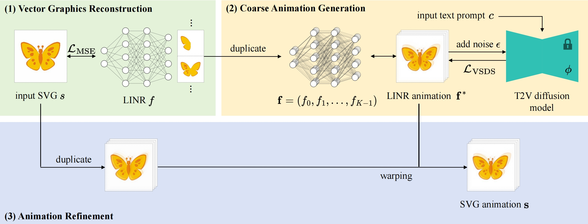
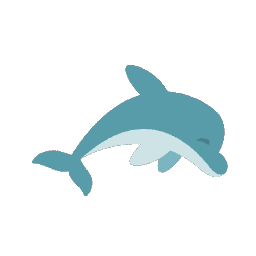
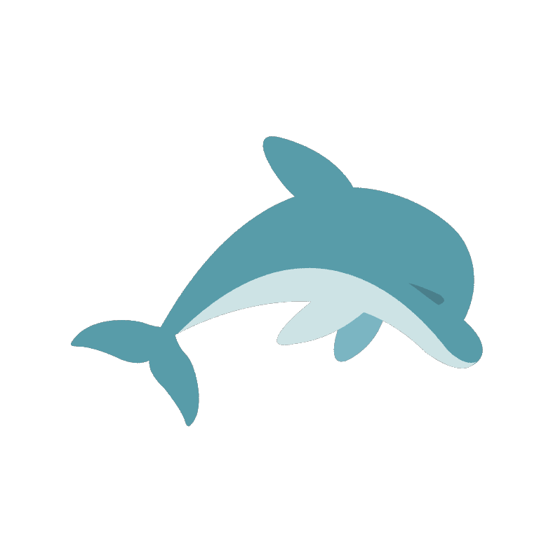
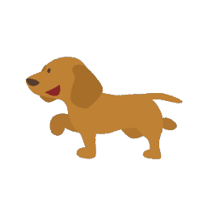
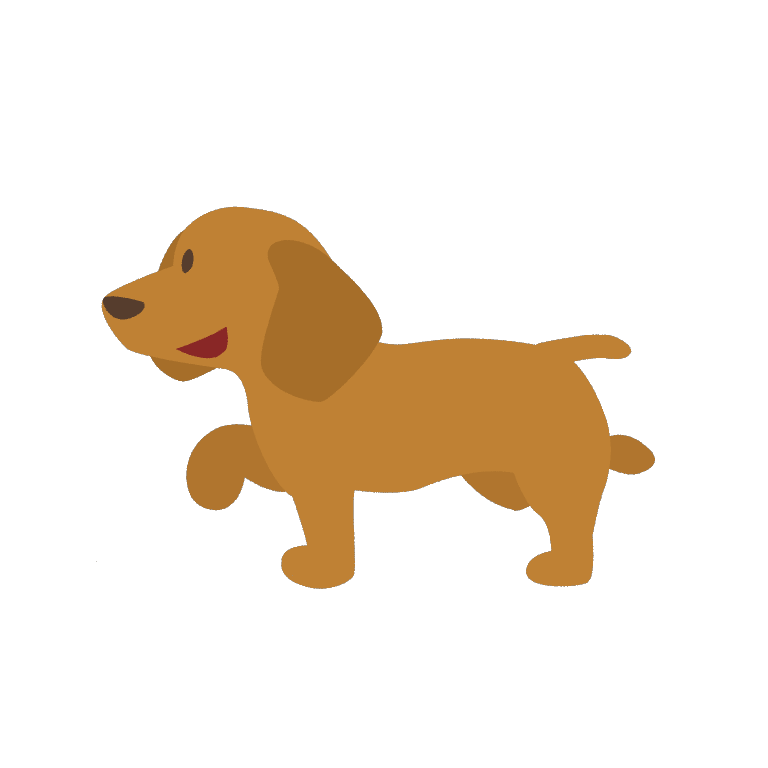
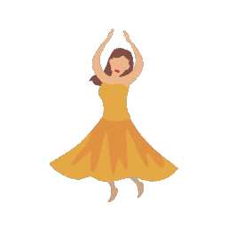
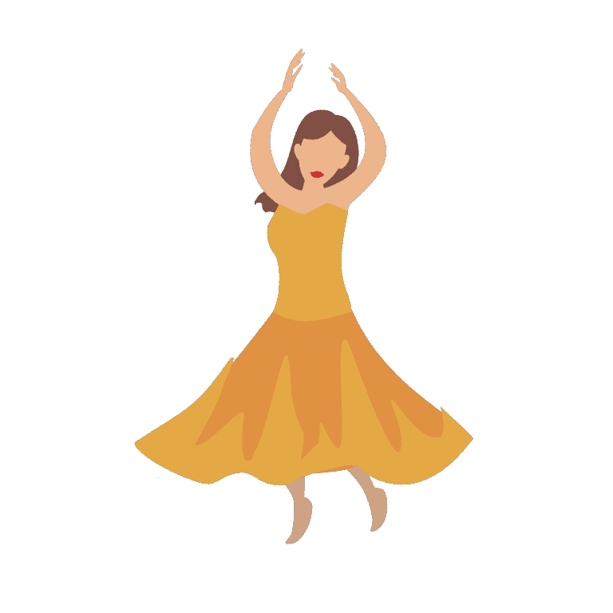

LINR Bridge: Vector Graphic Animation via Neural Implicits and Video Diffusion Priors
Wangxuan Institute of Computer Technology, Peking University, Beijing, China
Abstract
Vector graphics, known for their scalability and user-friendliness, provide a unique approach to visual content compared to traditional pixel-based images. Animation of these graphics, driven by the motion of their elements, offers enhanced comprehensibility and controllability but often requires substantial manual effort. To automate this process, we propose a novel method that integrates implicit neural representations with text-to-video diffusion models for vector graphic animation. Our approach employs layered implicit neural representations to reconstruct vector graphics, preserving their inherent properties such as infinite resolution and precise color and shape constraints, which effectively bridges the large domain gap between vector graphics and diffusion models. The neural representations are then optimized using video score distillation sampling, which leverages motion priors from pretrained text-to-video diffusion models. Finally, the vector graphics are warped to match the representations, resulting in smooth animation. Experimental results validate the effectiveness of our method in generating vivid and natural vector graphic animations, demonstrating significant improvement over existing techniques that suffer from limitations in flexibility and animation quality.
Pipeline

The pipeline of LINR Bridge takes an SVG and a text prompt as inputs, and produces an SVG animation as output. The pipeline consists of three steps: (1) Vector Graphics Reconstruction: Optimize a LINR network to reconstruct the SVG. (2) Coarse Animation Generation: Replicate the network multiple times to construct a multi-frame video, then input the frames and the text prompt into the text-to-video model, optimizing with video score distillation sampling (VSDS) to obtain a coarse animation. (3) Animation Refinement: Warp the SVG based on optical flow to match the animation, resulting in the final animated SVG.
Results
Input Image
"Anime style, Vector 2D art, A man is waving his hands smoothly."

Input Image
"Anime style, Vector 2D art, A cartoon blue dolphin swims and flexes its body smoothly."


Input Image
"Anime style, Vector 2D art, A cartoon yellow dog is walking."


Input Image
"Anime style, Vector 2D art, A woman in a yellow dress is dancing on her feet and hands."

Input Image
"The blue round clock with white board and two blue pointers rotates clockwise smoothly."
Input Image
"Anime style, Vector 2D art, Yellow spotted butterfly flies and flaps its wings."